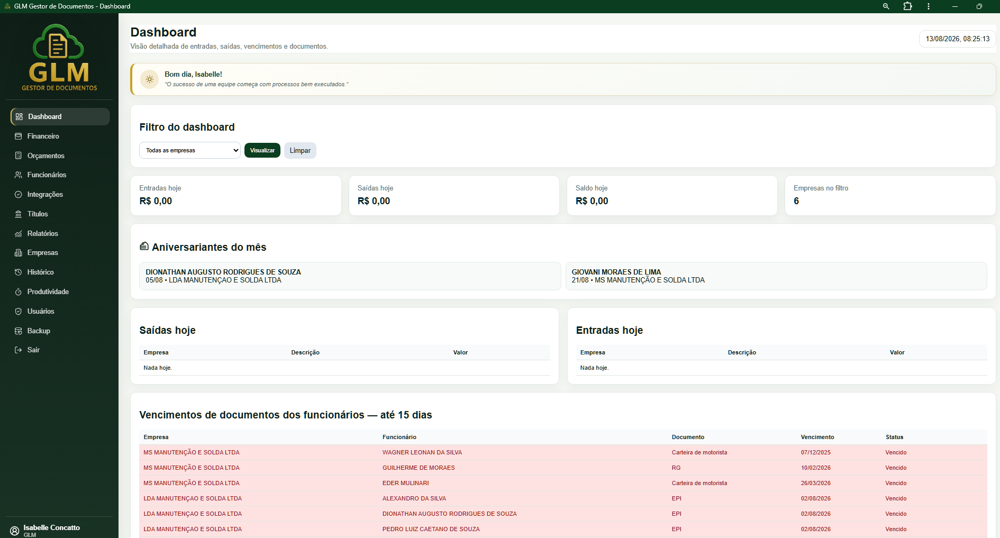
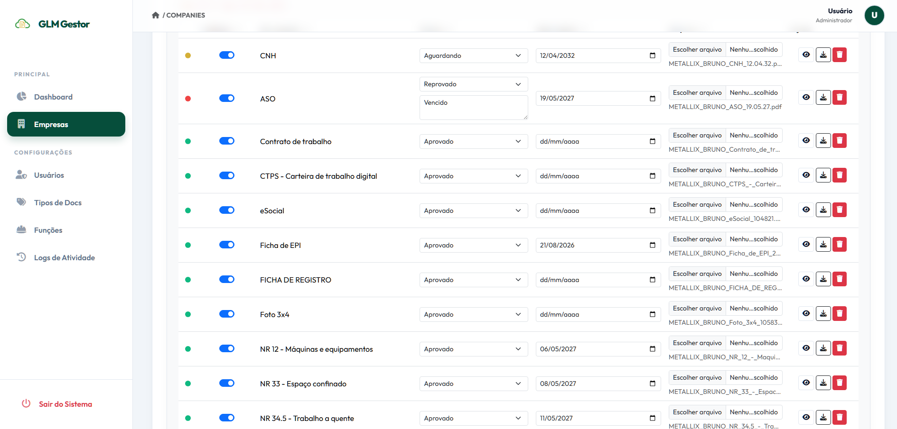

Segurança de dados
Informações organizadas, protegidas e com rotina de backup.
A GLM oferece duas plataformas independentes, desenvolvidas para necessidades diferentes. Escolha a solução ideal para a sua operação.
Gestão empresarial para centralizar a rotina administrativa em um só lugar.
Controle financeiro, orçamentos, funcionários, integrações, documentos, vencimentos e relatórios. Pode ser usado para uma única empresa ou para administrar várias empresas separadamente dentro da plataforma.

Controle da documentação das empresas terceirizadas contratadas pela indústria.
Uma plataforma específica para a indústria acompanhar documentos de terceiros, aprovações, reprovações e vencimentos, reduzindo o risco de empresas ou colaboradores entrarem na operação com documentação irregular.

Cada plataforma atende um processo diferente, mantendo os dados centralizados e acessíveis para a sua equipe.
Informações organizadas, protegidas e com rotina de backup.
Acompanhe a operação pelo computador ou celular.
Atendimento para auxiliar no uso das plataformas.
Melhorias contínuas para tornar a gestão mais eficiente.
Fale conosco e solicite uma demonstração do GLM Gestor ou do GLM Documentos.